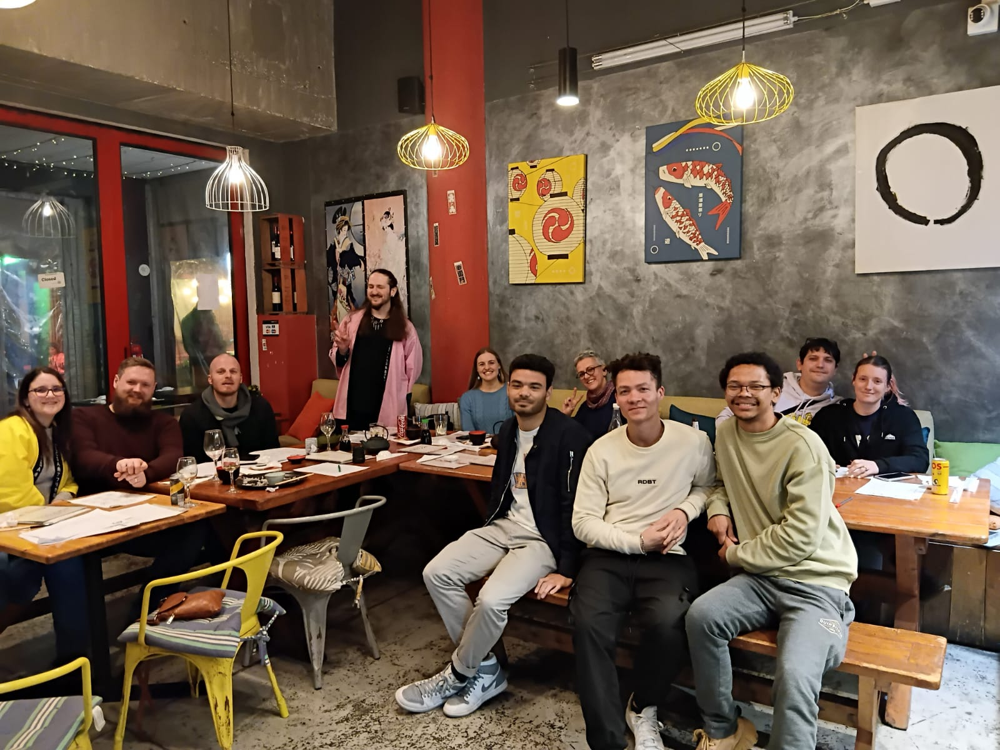
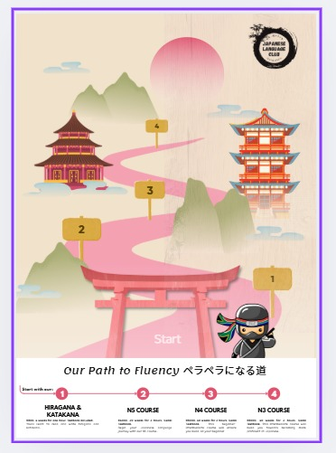
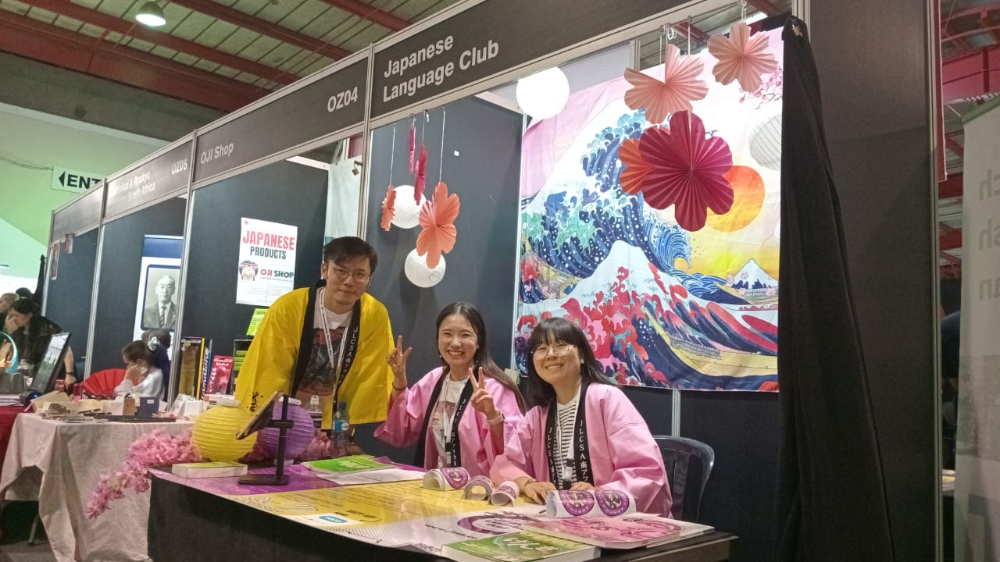

Six years of JLCSA, from its founder
i. It started with a failure
I founded JLCSA in January 2020 after failing JLPT N1, which I had been aggressively studying for alongside a full-time consulting job. I couldn’t face studying on my own again. The first version was simply people meeting up. Then Covid arrived and we moved everything online, which turned out to be the making of it: a distributed community rather than a Johannesburg social club, and a sense of connection for a lot of people at a hard time.
When students started asking for lessons I took a few on myself, but alongside a full-time job it was rewarding and tiring in equal measure, and I could not keep up with demand. So I found someone who could teach properly. Toshiki Tanisaki, an astrophysics graduate then studying South African landscaping, became our first teacher, and that hire was the moment a study group became a school.

ii. Building the product ladder
Growth came from productising, not marketing. Free community and events brought people in. We started with individual classes but moved quickly to courses: the first structured N5 course launched in 2022, then Hiragana and Katakana and N4 in 2023, and N3 in 2024, alongside a booking system to handle the volume. Because Japanese textbooks were expensive in South Africa, we produced our own, designed for online teaching, and bundled them with some of the courses. A partnership with Stellenbosch University’s Japan Centre gave the courses institutional backing and a more formal footing. Tiered membership, a points system and a member portal followed.
Each layer made the next one possible, and each one moved us further from selling my time.

iii. Growth outran the systems
2024 was the year it broke and got fixed. We passed R1 million in revenue for the first time, which meant VAT registration and an accounting firm. It also exposed everything held together manually: students booking without paying, no reliable view of classes held against classes redeemed, payment queries scattered across teachers, and a team burning out. We had to digitise in order to hold quality while serving both existing clients and new ones.
The fix was engineering rather than effort. We digitised the booking system, moved accounting onto Xero and payment upfront through Stripe, built automated class tracking that prompted teachers to confirm delivery, centralised payments away from teaching staff, moved every teacher onto their own infrastructure, and standardised the online teaching stack.
Revenue reached R1.2 million with a team of eight. By then we had over 1,000 members, more than 300 active students, and were running at least 24 events a year across Johannesburg, Cape Town, Pretoria and, increasingly, Bloemfontein.

iv. Beyond the classroom
Alongside the core business we built consulting revenue in market research, talent placement, e-commerce strategy and cultural consulting for Japanese companies entering South Africa, including Delaire Graff and Oji Shop. We also ran translation contracts, including a seven-month Japanese to English project for a biotech startup. We launched a corporate cultural events offering covering tea ceremony, calligraphy, manga and similar, and ran the stage at OtakuTown, the Japanese and Asian culture area of Comic Con Africa and Comic Con Cape Town.
By 2025 the obvious next step was product: a student incentives system for attending events and joining classes, and a language learning web app built on what six years of teaching data told us students actually got stuck on. That would become Zenbu, the app I am building now.
After six years, I sold the business in 2026. It had a team, a curriculum and a customer base that no longer depended on me, which was the point. Running it alongside a full-time job was never going to be indefinite, and the ideas I most wanted to build needed more than the business could hold. So I handed it over and moved on to the next thing I wanted to build.